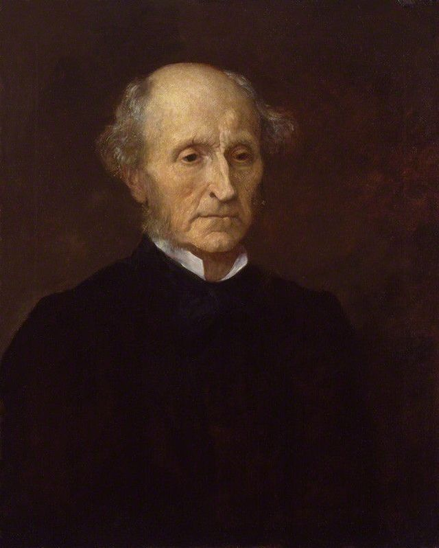

Who Was John Stuart Mill?
John Stuart Mill (1806–1873) was an English philosopher, political economist, logician, writer, and one of the most influential thinkers of the nineteenth century. He is especially famous for developing utilitarianism, defending individual liberty, and formulating the influential principle that political and social power should generally not be used to restrict a person's freedom unless that person's actions harm others.
Mill's philosophy covers an unusually wide range of subjects, including ethics, political philosophy, economics, logic, epistemology, democracy, freedom of speech, education, and women's rights. His best-known works, including On Liberty, Utilitarianism, and The Subjection of Women, remain central texts in discussions about freedom, morality, government, and human equality.
Although Mill developed within the British tradition of empiricism and utilitarianism, he did not simply repeat the ideas of earlier thinkers such as Jeremy Bentham. He attempted to create a more sophisticated form of utilitarian ethics that recognized differences in the quality of human experiences and emphasized individuality, intellectual development, and the importance of personal freedom.
For this reason, John Stuart Mill's philosophy continues to influence modern debates about free speech, democracy, minority rights, feminism, social justice, government power, and the limits of authority. He remains one of the foundational thinkers in the history of modern liberalism.
John Stuart Mill: Quick Facts
- Full name — John Stuart Mill
- Born — 20 May 1806
- Died — 8 May 1873
- Nationality — British
- Philosophical tradition — Utilitarianism, empiricism, liberalism
- Major philosophical subjects — Ethics, political philosophy, liberty, logic, epistemology, economics, and feminism
- Known for — The harm principle, utilitarianism, individual liberty, and free speech
- Major influence — Jeremy Bentham
- Important collaborator and influence — Harriet Taylor Mill
- Famous work — On Liberty
- Major ethical work — Utilitarianism
- Major feminist work — The Subjection of Women
John Stuart Mill's Early Life and Education

John Stuart Mill was born in London on 20 May 1806 into an intellectually demanding environment. He was the eldest son of James Mill, the Scottish philosopher, historian, and political economist. James Mill was closely associated with Jeremy Bentham and the Philosophical Radicals, and he designed his son's education partly to prepare him for intellectual leadership within the utilitarian reform movement.
Mill's education was remarkable for both its range and intensity. He began learning Greek at the age of three and Latin at eight. During his childhood, he studied classical literature, history, arithmetic, mathematics, and logic, while also reading extensively under his father's supervision. By his early teenage years, his studies had expanded to include political economy, philosophy, and other demanding intellectual subjects.
James Mill's method of education did not simply require his son to memorize information. John was expected to explain what he had read, analyse arguments, and discuss historical and philosophical questions. He also helped educate his younger siblings. This rigorous intellectual training gave Mill an unusually powerful capacity for analysis, but it also meant that much of his childhood was organized around study and intellectual discipline.
Mill grew up within the wider intellectual world of Benthamite utilitarianism. The ideas of Jeremy Bentham and the broader programme of political and social reform associated with the Philosophical Radicals therefore became central influences during his early development. Although Mill would later revise and significantly expand utilitarian philosophy, his early education provided the intellectual foundation from which much of his later work emerged.
The intensity of this upbringing also had serious personal consequences. At the age of twenty, Mill experienced what he later described as a profound mental crisis, during which he questioned whether achieving the reforming goals to which he had devoted himself would actually bring him happiness. His recovery helped transform his intellectual outlook, leading him to place greater importance on emotion, individuality, and the cultivation of human character alongside rational analysis.
James Mill and Jeremy Bentham's Influence on John Stuart Mill
James Mill played a decisive role in shaping John Stuart Mill's early intellectual life. A leading member of the Philosophical Radicals, James Mill was committed to utilitarianism, rational inquiry, education, and political reform. He deliberately designed his son's demanding education to prepare him for a life of intellectual work and to make him an effective participant in the wider movement for social and political reform.
Jeremy Bentham was the other major influence on Mill's early development. Bentham argued that moral and political questions should be judged according to their consequences for human happiness and suffering. His principle of utility provided a method for evaluating actions, laws, and institutions according to their tendency to promote human well-being rather than according to tradition, inherited authority, or social privilege.
The influence of Bentham on Mill was therefore not merely academic. Mill grew up within a circle of thinkers who believed that philosophical reasoning should contribute directly to practical reform. Utilitarian principles were applied to questions of law, government, education, and social institutions. From an early age, Mill came to see philosophy as closely connected with the improvement of human life.
John Stuart Mill remained deeply influenced by this tradition, but he eventually became critical of important aspects of strict Benthamism. He believed that Bentham's approach gave an inadequate account of some dimensions of human character, including imagination, emotion, culture, and individuality. Human beings, Mill increasingly argued, could not be understood simply through a model that measured pleasures and pains without considering differences in the quality of human experience.
Mill's mature philosophy can therefore be understood partly as an attempt to preserve the utilitarian commitment to human happiness while expanding its understanding of what happiness involves. He continued to defend utility as a fundamental moral principle, but he gave greater importance to individuality, emotional development, intellectual cultivation, and the diversity of human ways of life. In this sense, Mill was both an heir to Bentham and one of utilitarianism's most important reformers.
John Stuart Mill's Mental Crisis and Intellectual Transformation
One of the most important events in John Stuart Mill's life occurred in 1826, when, at the age of twenty, he experienced what he later described as a profound mental crisis. Mill had devoted himself to the cause of political and social reform, believing that his life's purpose lay in helping to transform society according to utilitarian principles. Yet he suddenly began to question whether achieving those goals would actually bring him happiness.
Mill described asking himself whether he would be happy if all the reforms he had been working toward were suddenly accomplished. His realization that the answer was no produced a deep crisis. The purpose that had previously given direction to his life no longer seemed capable of providing the happiness he expected. For many months, he experienced an intense depression while continuing much of his ordinary work and intellectual activity.
This experience forced Mill to reconsider important elements of the intellectual framework in which he had been raised. He came to believe that his early education had developed his powers of analysis while giving insufficient attention to the cultivation of feeling. A human life, he increasingly recognized, could not be made fulfilling through rational calculation and external achievement alone.
Literature and poetry became particularly important during Mill's recovery. He later wrote of the powerful effect of reading William Wordsworth, whose poetry helped him rediscover the value of emotion, imagination, and inner experience. This encounter did not cause Mill to abandon rational thought or political reform, but it helped him develop a broader understanding of human nature and happiness.
Mill's intellectual transformation also brought him into contact with thinkers and traditions outside the narrow framework of early Benthamism. He became increasingly interested in questions concerning culture, historical development, character, and the social conditions necessary for human growth. His later philosophy consequently combined the utilitarian concern for well-being with a much stronger appreciation of individuality and the development of human capacities.
The influence of this crisis can be seen throughout Mill's mature work. His defense of higher pleasures, individuality, freedom of thought, and diverse experiments in living reflects a conception of human flourishing that is considerably richer than the one he had initially inherited. Happiness, for Mill, could not be understood merely as the accumulation of immediate pleasurable experiences; it was also connected with the development of the whole human personality.
What Was John Stuart Mill's Philosophy?
John Stuart Mill's philosophy was concerned with some of the central questions of modern thought: How should human beings live? What makes actions morally right? How far should society and government interfere with individual freedom? And what conditions allow human beings and societies to develop? His work made important contributions to ethics, political philosophy, logic, epistemology, economics, and social theory.
In ethics, Mill defended utilitarianism, the view that happiness and the reduction of suffering are fundamental considerations in moral judgment. However, he developed the tradition he inherited from Bentham by arguing that pleasures differ not only in quantity but also in quality. The pleasures associated with intellect, imagination, moral feeling, and developed human capacities could therefore have a special value within a genuinely flourishing life.
In political philosophy, Mill is especially famous for his powerful defense of individual liberty. In On Liberty, he argued that society should allow a broad sphere of freedom for competent adults. People should not be coerced simply because their choices are regarded by others as unconventional, immoral, or personally unwise.
Mill regarded freedom as valuable for more than the protection of personal preference. Liberty allows individuals to develop their own character, discover their capacities, and experiment with different ways of living. A society that permits diversity can also learn from individual experiments, since no generation or social majority can safely assume that it already possesses the complete truth about how human beings ought to live.
Freedom of thought and discussion were equally important to Mill. He argued that even an apparently false opinion should not automatically be suppressed, because challenging established beliefs can expose error, clarify truth, and prevent accepted ideas from becoming empty dogma. Intellectual disagreement was therefore not merely an unavoidable feature of society but an important condition for intellectual progress.
Mill's philosophy ultimately connects liberty, happiness, and human development. He believed that social progress required institutions that promoted human well-being while also allowing individuals to cultivate their distinctive capacities. This combination of utilitarian ethics and liberal individualism made Mill one of the most influential philosophers in the history of modern political and moral thought.
John Stuart Mill and Utilitarianism
John Stuart Mill's utilitarianism is one of his most important philosophical contributions. Utilitarianism is a form of consequentialist ethics: it holds that the moral assessment of actions depends fundamentally on their consequences. Mill argued that happiness and the reduction of suffering provide the ultimate standard by which moral conduct should be evaluated.
Mill defended the basic utilitarian principle that actions are right in proportion as they tend to promote happiness and wrong in proportion as they tend to produce the opposite. By happiness, he famously meant pleasure and the absence of pain. This did not mean, however, that moral life should be reduced to selfish enjoyment or the pursuit of immediate gratification.
Utilitarian morality requires an impartial concern for the happiness of all those affected by an action. Mill rejected the idea that one person's interests automatically count for more simply because they are that person's own interests. Moral judgment requires individuals to consider the wider consequences of conduct and the well-being of other people as well as themselves.
Mill's most distinctive development of utilitarianism concerned the quality of pleasures. Bentham had generally emphasized differences in the quantity of pleasure, but Mill argued that it was mistaken to suppose that all pleasures differed only in amount. Pleasures involving intellect, imagination, feeling, and moral development could be more valuable in kind than simpler forms of enjoyment.
Mill proposed that the preferences of people who had experienced and were capable of appreciating both kinds of pleasure could help determine which pleasures were of a higher quality. His famous distinction between higher and lower pleasures was therefore connected with his belief that human beings possess capacities whose development forms an important part of a valuable and fulfilling life.
Mill's utilitarianism should consequently not be understood as a simple instruction to seek the largest possible amount of immediate pleasure. It is an ethical theory concerned with the overall conditions of human happiness, including intellectual and moral development, social cooperation, and the cultivation of capacities that make a distinctly human form of flourishing possible.
What Is John Stuart Mill's Greatest Happiness Principle?
The central principle of Mill's ethics is commonly called the greatest happiness principle, or the principle of utility. In Utilitarianism, Mill states that actions are right in proportion as they tend to promote happiness and wrong as they tend to produce the reverse of happiness. Moral evaluation therefore requires attention to the effects that actions have on human well-being.
Mill understood happiness in terms of pleasure and the absence of pain, while unhappiness involved pain and the deprivation of pleasure. Yet his account was not simply a defense of physical or immediate enjoyment. Because he believed that pleasures could differ in quality, his conception of happiness included the development and exercise of higher human capacities.
An essential feature of the principle is its impartiality. Utilitarian morality does not ask each person merely to maximize his or her own happiness. The happiness of all persons affected must be taken into consideration. Mill therefore presented utilitarian ethics as a universal rather than an egoistic moral theory.
The principle also provides a standard for evaluating social institutions and public policy. Laws, political arrangements, and social practices can be judged partly by asking whether they contribute to human well-being or create unnecessary suffering. This reforming dimension connected Mill's ethics with his wider interest in liberty, education, representative government, and social progress.
Mill did not believe that people must consciously calculate the total consequences of every ordinary action from the beginning. Much of moral life operates through established moral rules and social principles that have developed because following them generally promotes human welfare. In difficult cases, however, the principle of utility provides the more fundamental standard to which moral rules can ultimately be related.
The greatest happiness principle therefore connects individual conduct with a broader moral concern for humanity. Its central question is not simply, What will benefit me? but rather, What consequences will this action have for human happiness and suffering? For Mill, the ethical importance of happiness was inseparable from a commitment to considering the good of persons generally rather than treating one's own interests as uniquely important.
John Stuart Mill's Higher and Lower Pleasures
One of the best-known features of John Stuart Mill's utilitarianism is his distinction between higher and lower pleasures. Mill rejected the idea that all pleasures could be compared solely by their quantity. In his view, some forms of enjoyment are more valuable in quality because they involve the exercise of distinctively human capacities.
Mill associated higher pleasures with the exercise of the intellect, imagination, feelings, and moral sentiments. Intellectual inquiry, artistic appreciation, creative activity, and the cultivation of moral capacities could therefore form part of a higher mode of happiness. Lower pleasures were more closely connected with bodily and sensory satisfactions, though Mill did not deny that such pleasures were genuine and important elements of human life.
A central part of Mill's argument concerns what he called competent judges. When people who are genuinely acquainted with and capable of appreciating two different kinds of pleasure consistently prefer one to the other, even when the preferred form involves greater difficulty or dissatisfaction, Mill believed this preference provided evidence of a difference in quality.
Mill did not claim that physical pleasures were worthless or that human beings should ignore their bodily needs. His argument was instead that a complete account of happiness must recognize the complexity of human nature. People capable of developing intellectual, imaginative, and moral capacities may value a demanding form of life more highly than a life devoted entirely to easier forms of satisfaction.
This distinction allowed Mill to answer the criticism that utilitarianism reduces human life to the pursuit of simple pleasure. His philosophy presents happiness as connected not only with enjoyment but also with the development and exercise of important human capacities. The doctrine of higher pleasures consequently became one of Mill's most distinctive departures from the more strictly quantitative approach associated with Bentham.
John Stuart Mill's Ethics
John Stuart Mill's ethics is fundamentally concerned with the relationship between human actions and overall well-being. Mill defended the principle of utility as the ultimate standard of moral evaluation, but he did not believe that moral agents should begin every ordinary decision by calculating all possible consequences from the beginning.
Moral rules play an essential role in practical life. Over time, societies develop principles because certain forms of conduct generally promote security, trust, cooperation, and happiness. Rules against violence, cruelty, dishonesty, and injustice are important because their general observance protects conditions that human beings need in order to live and cooperate successfully.
Mill therefore distinguished between the ultimate standard of morality and the ordinary rules people use in daily life. The principle of utility provides the fundamental basis for evaluating moral practices, while established rules often guide action because human beings cannot realistically calculate every consequence on every occasion.
This does not mean that existing moral rules are beyond criticism. Rules may require revision when experience shows that they no longer promote human welfare or when they conflict with more important moral considerations. Mill's utilitarianism therefore combines respect for stable moral practices with the possibility of rational moral reform.
His ethical philosophy is consequently more complex than the instruction to maximize immediate pleasure. It considers long-term consequences, social cooperation, moral education, and the development of human capacities. Mill sought an ethical theory capable of explaining both why general moral principles matter and why those principles must ultimately remain connected with the conditions of human flourishing.
John Stuart Mill's On Liberty
On Liberty, published in 1859, is John Stuart Mill's most famous work of political philosophy. The book investigates a fundamental question: when, if ever, should society or government be permitted to interfere with an individual's freedom? Mill's answer became one of the foundational statements of modern liberal political thought.
Mill was deeply concerned about the dangers of social conformity and majority opinion. Even in democratic societies, he argued, individuals could experience powerful pressure to think, speak, and live in ways approved by the majority. Political democracy alone was therefore not sufficient to guarantee genuine liberty.
The purpose of On Liberty was to establish a general principle concerning the legitimate limits of social authority over the individual. Mill's central answer became known as the harm principle, although the wider argument of the book also depends upon his utilitarian concern with the long-term value of individuality, discussion, and human development.
The work contains a powerful defense of freedom of thought and discussion. Mill argues that no individual or majority possesses such complete intellectual certainty that it can safely silence every opposing view. Even mistaken opinions can perform an important role by forcing accepted beliefs to defend themselves against criticism.
On Liberty also defends individuality and what Mill famously described as experiments in living. Different people, he argued, should have substantial freedom to develop their own ways of life. These ideas continue to influence discussions about censorship, personal autonomy, democracy, social conformity, and minority rights.
What Is John Stuart Mill's Harm Principle?
John Stuart Mill's harm principle is perhaps his most famous political idea. In On Liberty, Mill argues that the only purpose for which power can rightfully be exercised over a member of a civilized community against that person's will is to prevent harm to others. The principle was intended to establish a strong presumption in favour of individual liberty.
Mill's argument creates an important distinction between conduct that primarily concerns an individual's own life and conduct that prejudicially affects the interests of others. Competent adults should generally be free to make decisions about themselves even when other people regard those decisions as foolish, immoral, unhealthy, or unconventional.
However, freedom is not unlimited. Violence, fraud, coercion, and other conduct that injures or threatens important interests of other people may provide grounds for social or legal intervention. Mill's principle is therefore not a defense of unrestricted action but an attempt to distinguish legitimate protection of others from mere paternalism or social disapproval.
Mill also recognized that the existence of harm does not automatically settle every political question. His wider utilitarian philosophy still requires consideration of the consequences of intervention and the dangers created by unnecessary restrictions on liberty. The harm principle should therefore be understood as central to his theory, but not as a mechanical formula capable of resolving every difficult case.
The principle remains controversial because philosophers continue to debate what counts as harm, how serious a risk must be before intervention is justified, and how far apparently private actions can affect others. Nevertheless, Mill's argument remains one of the most influential attempts to define limits on government and social authority over individual life.
John Stuart Mill's Philosophy of Individual Liberty
Individual liberty was central to John Stuart Mill's political philosophy. Mill did not defend freedom merely because he believed that individuals should be permitted to do whatever they want. Liberty was valuable because it contributed to the development of human capacities and, over the long term, to the progress of society.
Individuals learn through experience, experimentation, success, and failure. If society imposes a single approved way of living, people may lose opportunities to discover different possibilities for personal development. Mill therefore regarded diversity in character and lifestyle as an important source of both individual growth and collective learning.
Mill's defense of liberty also contains a powerful argument against paternalism. He was skeptical of restricting the choices of competent adults simply because authorities or majorities believed they knew what was best for those individuals. Making choices and bearing responsibility for them could itself form part of the development of character.
At the same time, Mill did not treat liberty as an absolute right detached from every social consideration. Individual freedom exists within a community in which people affect one another, and conduct that genuinely harms others may properly become subject to social regulation. His theory therefore seeks to protect a broad sphere of personal independence rather than to deny the legitimacy of all political authority.
Mill's philosophy of freedom ultimately connects liberty with autonomy, individuality, responsibility, and human development. A society that protects freedom does more than protect private choice; it creates conditions in which different forms of human potential can emerge, develop, and contribute to the wider community.
John Stuart Mill on Freedom of Speech and Expression
John Stuart Mill is one of the most important philosophical defenders of freedom of speech and discussion. In On Liberty, he argues that suppressing an opinion can damage society even when the overwhelming majority believes that the opinion being suppressed is false.
Mill begins with the possibility that the suppressed opinion may actually be true. No individual or group possesses complete certainty, and a majority may therefore silence an opinion that contains an important truth. Censorship can deprive both present and future generations of the opportunity to correct their beliefs.
Even when an opinion is entirely false, Mill argues that discussion can still be valuable. Defending a true belief against objections helps people understand the reasons supporting it. Without opposition, people may inherit correct ideas merely through habit and repeat them without a genuine understanding of their meaning or justification.
Mill also emphasizes a third possibility: opposing views may each contain part of the truth. Human knowledge is often incomplete, and intellectual progress can result from the confrontation and correction of competing perspectives. Open discussion may therefore produce a fuller understanding than either side possessed independently.
For Mill, freedom of expression is consequently connected with the pursuit of truth and the intellectual development of society. He feared that unquestioned beliefs could become what he described as "dead dogma"—ideas accepted mechanically rather than understood as living convictions supported by reasons and experience.
John Stuart Mill on Individuality and Human Development
Individuality occupies a central position in Mill's philosophy of liberty. He believed that human beings should not simply copy the customs, opinions, and lifestyles of the people around them. Each individual should have substantial space to develop personal capacities and pursue a way of life suited to his or her own character.
Mill famously described different ways of life as "experiments in living." No single person or social majority possesses complete knowledge of the best way for every human being to live. Allowing individuals to make different choices therefore creates opportunities for personal discovery and for society to learn from diverse forms of experience.
Conformity, by contrast, can become intellectually and morally dangerous. When people feel overwhelming pressure to adopt the same beliefs and habits, society may lose creativity, independence, and the ability to challenge established assumptions. Mill was concerned not only with political oppression but also with the quieter pressure created by dominant customs and public opinion.
Individuality was therefore not merely a private preference for Mill. The development of distinctive character was an important component of human flourishing. A person who merely follows custom without exercising judgment may be socially obedient, but Mill questioned whether such conformity represented genuine personal development.
Mill also connected individuality with social progress. Free individuals can develop new ideas, practices, and forms of life that challenge the limitations of existing society. Protecting individuality therefore benefits not only unusual or independent persons but also the wider community, which may learn from experiments that depart from established conventions.
John Stuart Mill and the Tyranny of the Majority
Mill was deeply concerned that democratic government could create a form of oppression often described as the tyranny of the majority. A majority may possess political power, but majority opinion is not automatically correct, wise, or morally justified. Democracy therefore requires limits that protect individuals and minorities from unjust collective interference.
Representative government can protect citizens from the arbitrary power of a monarch or small ruling group, yet democratic societies can also create powerful pressure to conform. Mill believed that individual liberties required protection even when a large majority strongly disapproved of a particular belief, opinion, or way of life.
His concern extended beyond formal political institutions. Social customs, public opinion, religious attitudes, and cultural expectations can also restrict freedom. People may conform not because the law commands them to do so but because they fear ridicule, exclusion, loss of status, or other forms of social punishment.
Mill's concern was therefore directed against both political tyranny and social tyranny. The latter could be especially pervasive because it enters everyday life and shapes what people feel able to say, believe, and become, even when no government directly orders conformity.
His analysis remains important in modern political philosophy because it raises difficult questions about the relationship between democracy and minority rights. A democratic society must do more than count votes; it must also consider how collective power affects individual freedom, dissenting voices, and the possibility of intellectual and social diversity.
John Stuart Mill's Political Philosophy
John Stuart Mill's political philosophy combines a commitment to representative government with a strong concern for individual liberty. He believed that political institutions should promote public welfare while also protecting citizens from unnecessary interference by governments, majorities, and powerful social groups.
Mill supported representative government partly because political participation could contribute to the intellectual and moral development of citizens. Participation in public affairs encourages individuals to consider interests beyond their immediate private concerns and can develop habits of discussion, judgment, and civic responsibility.
At the same time, Mill did not believe that democracy automatically guaranteed justice or wisdom. Majorities could be mistaken, and political institutions required educated public discussion and meaningful protection for minority viewpoints. The existence of majority rule could not by itself justify every exercise of political power.
Mill was also concerned with the quality of political participation. His writings on representative government examine questions about voting, political competence, education, local institutions, and the relationship between individual development and public life. His views on some of these questions, including proposals concerning plural voting, remain controversial and reflect important tensions within his political thought.
Mill's political philosophy therefore attempts to balance collective decision-making with individual independence. Government was necessary for maintaining justice and public institutions, but political authority also required limits. His broader goal was a form of political life that could promote both social welfare and the active development of free and independent citizens.
John Stuart Mill and Women's Rights
John Stuart Mill was one of the most important nineteenth-century philosophical advocates of women's equality. He argued that the legal and social subordination of women was unjust and prevented society from benefiting from the abilities, knowledge, and contributions of a large part of the human population.
Mill challenged the assumption that existing gender roles demonstrated natural differences between men and women. He argued that it was impossible to know fully what women were naturally capable of when social institutions had historically restricted their education, employment, political participation, property rights, and personal independence.
His arguments connected women's equality with his broader philosophy of liberty and individuality. If human development requires freedom and the opportunity to cultivate one's abilities, then systematically denying such opportunities to women represents both an injustice to individuals and a loss to society as a whole.
Mill also supported practical political reform. As a Member of Parliament, he became associated with the campaign to extend women's suffrage and supported an amendment in 1867 that would have replaced the word "man" with "person" in the relevant electoral legislation. Although the proposal failed, it became an important moment in the history of the British campaign for women's voting rights.
Mill's views on gender equality were closely connected with his long intellectual relationship with Harriet Taylor Mill. Their discussions and collaboration were important to the development of his thinking about marriage, equality, freedom, and the position of women. The precise extent of Taylor's contribution to particular works remains debated, but her importance to Mill's intellectual development should not be reduced to a merely personal influence.
John Stuart Mill's The Subjection of Women
The Subjection of Women, published in 1869, is one of the most important nineteenth-century philosophical works on gender equality. Mill argues that the traditional legal and social relationship between men and women was founded on inequality and inherited power rather than on principles that could be rationally defended.
Mill rejected the idea that an institution should be accepted merely because it was ancient or widely supported. A social arrangement can survive for centuries and still be unjust. Existing customs concerning marriage, family life, education, and gender roles should therefore be examined according to principles of liberty, equality, and human development.
One of Mill's central arguments concerned the difficulty of determining what women were naturally capable of under conditions of systematic inequality. When people are educated differently, denied opportunities, and encouraged to develop different characteristics, apparent evidence about "natural" ability may actually reflect the effects of social institutions rather than unchanging human nature.
Mill also argued that equality would improve society itself. When women are denied education and opportunities, society loses knowledge, creativity, and human ability. Greater freedom would allow individuals to develop according to their capacities rather than being confined by predetermined social roles and expectations.
The Subjection of Women remains historically significant because it applied the philosophical language of liberty and equality to deeply established gender relations. The work secured Mill an important place in the history of feminist political thought, while also raising questions about marriage, power, individuality, and the relationship between private life and political justice.
John Stuart Mill and Harriet Taylor Mill
Harriet Taylor Mill was one of the most important intellectual influences in John Stuart Mill's adult life. Their relationship involved a long exchange of ideas concerning freedom, equality, marriage, social reform, and the position of women in society. They knew each other for many years before marrying in 1851, following the death of Harriet's first husband, John Taylor.
Mill himself repeatedly emphasized Harriet Taylor's importance to his intellectual development. In his Autobiography, he described their relationship as an intellectual partnership and credited her with contributing substantially to the development and expression of many of his ideas. Their discussions shaped his reflections on equality, marriage, individuality, and social reform.
The precise extent of Harriet Taylor Mill's contribution to particular works remains a subject of scholarly debate. Some of Mill's statements about her influence have been interpreted as expressions of unusually generous admiration, while other research emphasizes evidence of her own independent and often radical political and social views.
It is therefore historically misleading either to deny Harriet Taylor's intellectual importance or to assume that every idea in Mill's published works can be straightforwardly attributed to her. Their relationship involved influence, collaboration, disagreement, and a sustained exchange of ideas whose precise boundaries cannot always be reconstructed.
Their intellectual partnership is especially important when studying Mill's feminism and social thought. His defense of women's equality did not develop in isolation but emerged within a long period of reflection on the institutions that shaped marriage, family life, economic dependence, personal freedom, and the possibilities for human equality.
John Stuart Mill's Empiricism and Theory of Knowledge
John Stuart Mill belonged to the broad tradition of British empiricism, which emphasizes the importance of experience in the formation of human knowledge. He rejected the idea that knowledge of the world could be established primarily through innate ideas independent of experience and developed an account of thought strongly influenced by associationist psychology.
Mill investigated how human beings form concepts, make generalizations, and develop knowledge about the world. Experience provides the material from which people learn, but reasoning also involves comparing cases, identifying regularities, forming classifications, and drawing conclusions that extend beyond particular observations.
His empiricism was closely connected with his work in logic and scientific methodology. Mill was especially interested in the problem of induction: how human beings can move from observed cases to more general conclusions about nature. This question became central to his attempt to understand scientific reasoning.
Mill also developed influential views about causation. Rather than treating causes as simple isolated events, he analyzed causal explanation in relation to the conditions that regularly contribute to the production of an effect. His work attempted to provide systematic methods for distinguishing genuine causal relationships from accidental coincidence.
These questions made Mill an important figure not only in ethics and political philosophy but also in the history of logic, epistemology, and philosophy of science. His wider intellectual project sought to explain how systematic human knowledge could be grounded in experience while still allowing reasoning to move beyond what had already been directly observed.
John Stuart Mill's A System of Logic
Mill's A System of Logic, Ratiocinative and Inductive, first published in 1843, is one of his major philosophical works. It made an important contribution to nineteenth-century discussions about reasoning, scientific knowledge, causation, and the methods through which human beings move from particular observations to more general conclusions.
Mill was particularly interested in inductive reasoning. Deductive reasoning begins with general premises and derives conclusions from them, whereas induction attempts to establish general knowledge through observation and experience. Scientific inquiry depends heavily on this movement from particular cases toward broader claims about the natural world.
His work is especially famous for the Methods of Experimental Inquiry, often called Mill's Methods. These include the Method of Agreement, Method of Difference, Joint Method of Agreement and Difference, Method of Residues, and Method of Concomitant Variations. They were intended to help investigators identify possible causal relationships systematically.
These methods compare cases in which particular conditions are present, absent, or vary together. By examining such patterns, investigators may distinguish relationships that appear causally significant from those that are merely accidental. Mill's analysis became highly influential in later discussions of scientific method and causal reasoning.
Later developments in formal logic, statistics, and philosophy of science criticized and revised important aspects of Mill's theories. Nevertheless, A System of Logic remains a major work in the history of modern thought about induction, evidence, causation, scientific explanation, and the relationship between empirical observation and systematic reasoning.
John Stuart Mill and Political Economy
John Stuart Mill was also one of the major political economists of the nineteenth century. His Principles of Political Economy, first published in 1848, developed within the tradition of classical political economy while addressing broader questions about wealth, labor, distribution, social progress, and the relationship between economic institutions and human welfare.
One of Mill's most important distinctions concerned production and distribution. He argued that the conditions governing the production of wealth were constrained by physical and practical realities, whereas the distribution of wealth was shaped to a much greater extent by human institutions, laws, and social arrangements. Societies could therefore make different choices about how economic resources were distributed.
This position allowed Mill to support significant social and economic reforms while remaining committed to the importance of individual initiative and economic freedom. He did not regard existing property arrangements as beyond criticism simply because they were historically established. Economic institutions, like political institutions, could be evaluated according to their consequences for human welfare and development.
Mill's later economic thought also showed interest in worker cooperation, employee ownership, and alternatives to purely competitive economic arrangements. He was critical of treating unrestricted laissez-faire as an absolute principle and believed that the appropriate role of institutions had to be considered in relation to wider questions of justice, welfare, and social progress.
His economic writings demonstrate the breadth of his intellectual project. Mill did not separate ethical questions completely from economics because economic institutions directly influence human opportunities, education, independence, equality, and the conditions under which individuals are able to pursue meaningful and flourishing lives.
John Stuart Mill vs Jeremy Bentham
The relationship between John Stuart Mill and Jeremy Bentham is central to understanding the development of utilitarian philosophy. Mill inherited Bentham's commitment to the principle of utility and the belief that moral and political institutions should be judged according to their consequences for human happiness and suffering.
Bentham is commonly associated with a quantitative approach to pleasure. His analysis compared pleasures according to factors such as intensity, duration, certainty, and extent. Mill accepted the fundamental importance of consequences for happiness but argued that it was mistaken to suppose that differences between pleasures could always be understood solely in quantitative terms.
Mill's distinction between higher and lower pleasures consequently became one of the most important differences between the two thinkers. He argued that pleasures connected with the exercise of higher human faculties could possess a superiority of quality. This introduced a conception of happiness that placed greater emphasis on intellectual, imaginative, and moral development.
Mill also developed a broader concern with individuality, character, and personal development. While Bentham was a major advocate of legal and institutional reform, Mill devoted particular attention to the ways in which social conformity and paternal authority could restrict the development of independent human personalities.
The differences between Mill and Bentham should not obscure their important continuity. Mill remained a utilitarian and continued to regard human happiness as central to moral and political evaluation. His mature philosophy can best be understood not as a complete rejection of Bentham, but as an attempt to revise and expand the utilitarian tradition in light of a richer account of human capacities, individuality, and flourishing.
Major Works of John Stuart Mill
John Stuart Mill produced a large and influential body of work across ethics, political philosophy, logic, economics, and social theory. Several of his books remain essential reading for students of modern philosophy and political thought.
- On Liberty — Mill's major defense of individual freedom, free speech, individuality, and the harm principle.
- Utilitarianism — A major explanation and defense of Mill's ethical theory of happiness and higher pleasures.
- The Subjection of Women — An important philosophical argument for women's equality and social freedom.
- A System of Logic — A major work on reasoning, induction, scientific methodology, and knowledge.
- Considerations on Representative Government — Mill's analysis of democracy, representation, political participation, and government.
- Principles of Political Economy — A major work examining wealth, production, distribution, and economic society.
- Autobiography — Mill's account of his unusual education, mental crisis, intellectual development, and relationship with Harriet Taylor Mill.
John Stuart Mill's Main Philosophical Ideas
1. The Greatest Happiness Principle
Moral actions should be evaluated partly according to their consequences for human happiness and suffering. Ethics should consider the well-being of all affected individuals rather than merely serving the interests of the person performing the action.
2. Higher and Lower Pleasures
Human pleasures differ in quality as well as quantity. Intellectual, moral, and artistic forms of experience can represent higher forms of human flourishing because they involve the development of important human capacities.
3. The Harm Principle
Society and government should generally not interfere with a competent individual's freedom merely for that person's own good. Coercive power is most clearly justified when it is necessary to prevent harm to other people.
4. Freedom of Speech
Even unpopular or mistaken opinions should generally be open to discussion. Suppressing ideas can prevent the discovery of truth, weaken public understanding, and allow accepted beliefs to become unexamined dogmas.
5. Individuality
Human beings should have the opportunity to develop their own capacities and experiment with different ways of living. Individual diversity can contribute to both personal growth and social progress.
6. Equality for Women
Mill argued that the subordination of women was unjust and socially harmful. Equal opportunities and freedom would allow individuals to develop according to their abilities rather than being restricted by inherited gender roles.
John Stuart Mill's Influence and Legacy
John Stuart Mill's influence extends across ethics, political philosophy, economics, feminism, liberalism, and modern discussions of human rights. His defense of individual liberty remains one of the most frequently discussed philosophical arguments about the limits of government and social authority.
Modern debates about free speech often return to Mill's arguments in On Liberty. Questions about censorship, misinformation, offensive speech, academic freedom, and political dissent continue to involve problems closely related to the issues Mill examined in the nineteenth century.
His utilitarianism also remains a major ethical theory. Contemporary philosophers continue to debate whether morality should be understood primarily in terms of consequences and well-being, and Mill's distinction between different forms of value remains central to those discussions.
Mill's arguments for women's equality gave him an important place in the history of feminist philosophy. His broader commitment to individuality and equal opportunity continues to influence modern liberal thought about autonomy, personal freedom, and human development.
John Stuart Mill's Philosophy Explained Simply
John Stuart Mill asked a simple but extremely important question: How can people live freely together in a society? His answer attempted to balance individual freedom with responsibility toward other people.
- What makes an action morally good? Actions should promote human happiness and reduce unnecessary suffering.
- Are all pleasures equal? No. Mill argued that intellectual and moral forms of happiness can be more valuable than purely physical pleasures.
- When should society limit freedom? Generally when a person's actions cause genuine harm to other people.
- Why should unpopular opinions be allowed? Because they may be true, partly true, or useful for testing and strengthening accepted beliefs.
- Why is individuality important? People develop by making choices, experimenting, learning from experience, and cultivating their own abilities.
- What did Mill believe about women? Women should have equal freedom and opportunities because legal and social subordination is unjust and prevents human development.
Why Is John Stuart Mill Important in the History of Philosophy?
John Stuart Mill is important because he transformed several major areas of modern philosophy. His work developed utilitarian ethics, created one of the most influential philosophical defenses of individual liberty, and contributed significantly to political theory, logic, economics, and feminism.
His philosophy is particularly important because it attempts to reconcile ideas that can sometimes appear to conflict. Mill valued individual freedom, but he also believed that human beings have moral responsibilities toward others. He defended democracy while warning against the tyranny of the majority.
He supported the pursuit of happiness while arguing that happiness involves more than immediate pleasure. He defended social progress but remained suspicious of attempts to impose a single model of the good life upon every individual.
These tensions make Mill's philosophy highly relevant to the modern world. Questions about liberty, equality, censorship, democracy, minority rights, and moral responsibility continue to reflect the philosophical problems he explored.
Frequently Asked Questions About John Stuart Mill
Who was John Stuart Mill?
John Stuart Mill was a nineteenth-century British philosopher, political economist, logician, and writer. He is famous for his work on utilitarianism, individual liberty, free speech, democracy, and women's rights.
What is John Stuart Mill famous for?
John Stuart Mill is especially famous for the harm principle, his defense of individual liberty in On Liberty, his development of utilitarian ethics, and his philosophical arguments for women's equality.
What was John Stuart Mill's philosophy?
John Stuart Mill's philosophy combined utilitarian ethics with a powerful defense of individual freedom. His work examined happiness, higher pleasures, liberty, free speech, democracy, equality, logic, economics, and human development.
What is John Stuart Mill's harm principle?
The harm principle states, in general terms, that society should not exercise coercive power over a competent individual simply for that person's own good. Restricting freedom is most clearly justified when necessary to prevent harm to others.
What is John Stuart Mill's theory of utilitarianism?
Mill's utilitarianism argues that morality should promote happiness and reduce suffering. Unlike a purely quantitative theory of pleasure, Mill also argued that some forms of pleasure are qualitatively higher because they involve intellectual and moral human capacities.
What are higher and lower pleasures?
Higher pleasures include intellectual, artistic, and moral experiences, while lower pleasures are more closely associated with physical and sensory satisfaction. Mill argued that human happiness cannot be understood simply by measuring the quantity of pleasure.
What did John Stuart Mill say about freedom?
Mill argued that individual freedom is essential for human development and social progress. People should generally be free to think, speak, and live according to their own choices unless their actions cause harm to other people.
Why did John Stuart Mill defend free speech?
Mill believed that suppressing opinions could prevent the discovery of truth. Even false opinions can be useful because challenging error helps people understand and defend their beliefs rather than accepting them without reflection.
What is the tyranny of the majority?
The tyranny of the majority occurs when the majority uses political or social power to suppress minority opinions and individual lifestyles. Mill believed that democratic societies must protect individual freedom as well as majority rule.
What did John Stuart Mill believe about women's rights?
Mill argued that the legal and social subordination of women was unjust. He supported greater equality in education, employment, political participation, and personal freedom.
What is The Subjection of Women about?
The Subjection of Women is Mill's major philosophical work arguing against the inequality of women. The book examines gender roles, marriage, legal inequality, freedom, and the importance of equal opportunities.
How was John Stuart Mill different from Jeremy Bentham?
Both philosophers were utilitarians, but Mill argued that pleasures differ in quality as well as quantity. Mill also placed greater emphasis on individuality, higher human capacities, liberty, and personal development.
What is John Stuart Mill's most famous book?
John Stuart Mill's most famous book is generally considered to be On Liberty, published in 1859. It contains his influential arguments concerning individual freedom, free speech, individuality, and the harm principle.
Why is John Stuart Mill still important today?
Mill remains important because modern societies continue to debate free speech, government authority, individual rights, democracy, censorship, equality, and moral responsibility. His philosophical framework continues to provide important arguments for examining these problems.
Related Modern and Enlightenment Philosophers
Explore other major philosophers connected with empiricism, utilitarianism, liberalism, political philosophy, ethics, modern philosophy, and the history of Western thought.
Related Areas of Philosophy
John Stuart Mill's philosophy connects utilitarian ethics with political philosophy, epistemology, philosophy of science, feminism, liberalism, democracy, individual liberty, and the history of modern philosophy.
Why John Stuart Mill Still Matters
John Stuart Mill remains one of the most important philosophers for understanding the modern relationship between freedom and society. His work asks how individuals can be protected from unnecessary political and social interference while still recognizing the responsibilities people have toward one another.
His philosophy of utilitarianism attempted to make human happiness a central concern of ethics without reducing human life to simple pleasure. His distinction between higher and lower pleasures reflected his belief that intellectual, moral, and creative development are essential dimensions of human flourishing.
Mill's defense of free speech, individuality, women's equality, and representative government continues to shape modern discussions about liberal democracy and human rights. His warning about the tyranny of the majority remains especially relevant wherever social pressure threatens independent thought and minority viewpoints.
Understanding John Stuart Mill helps explain the development of modern liberalism and utilitarianism. More importantly, his philosophy continues to challenge us to think carefully about when society should interfere with individual freedom and how human happiness, equality, and liberty can exist together.
Explore Great Philosophers